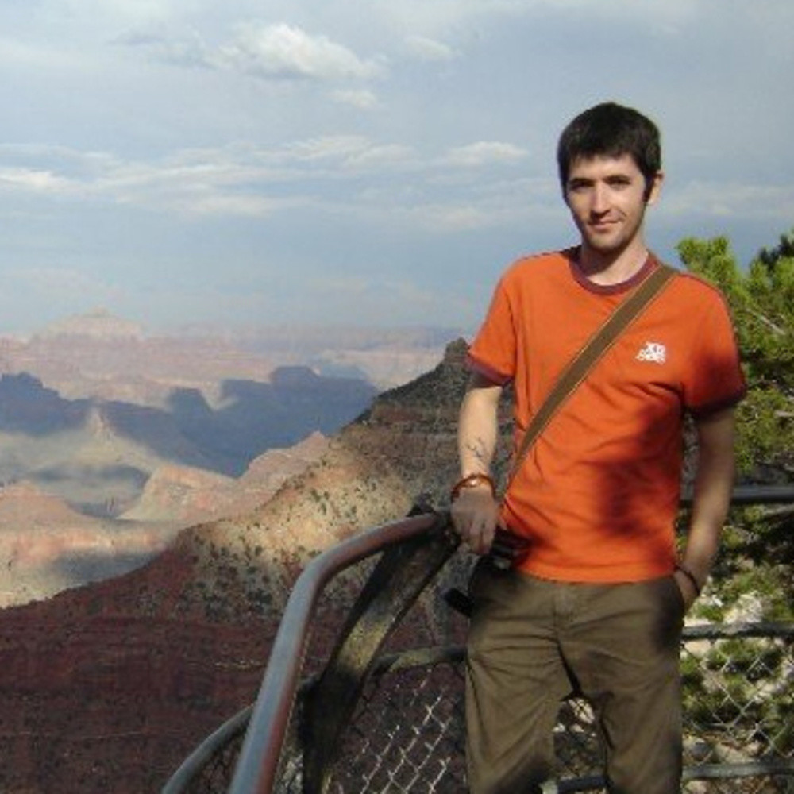
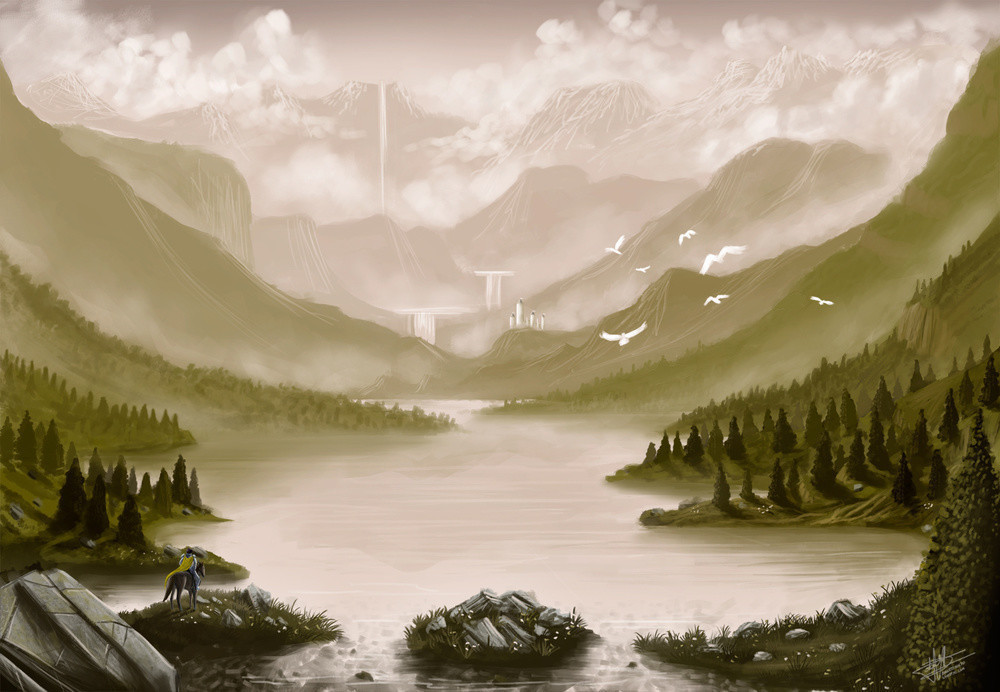
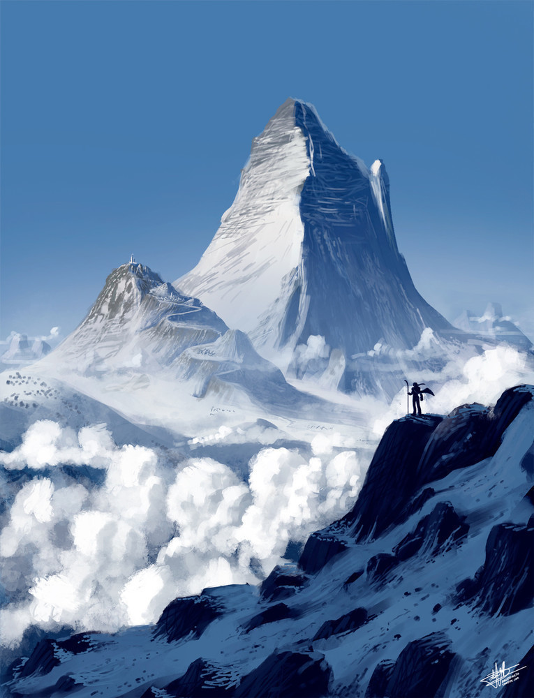
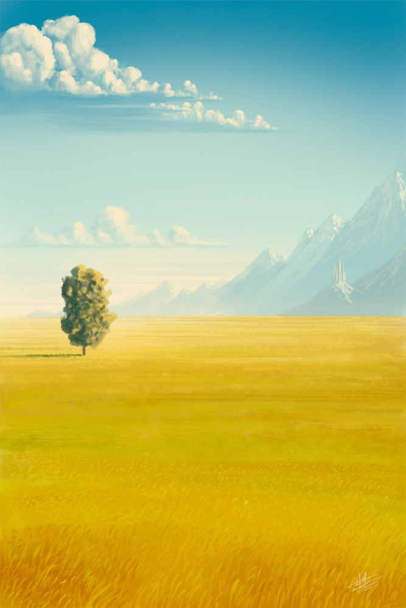
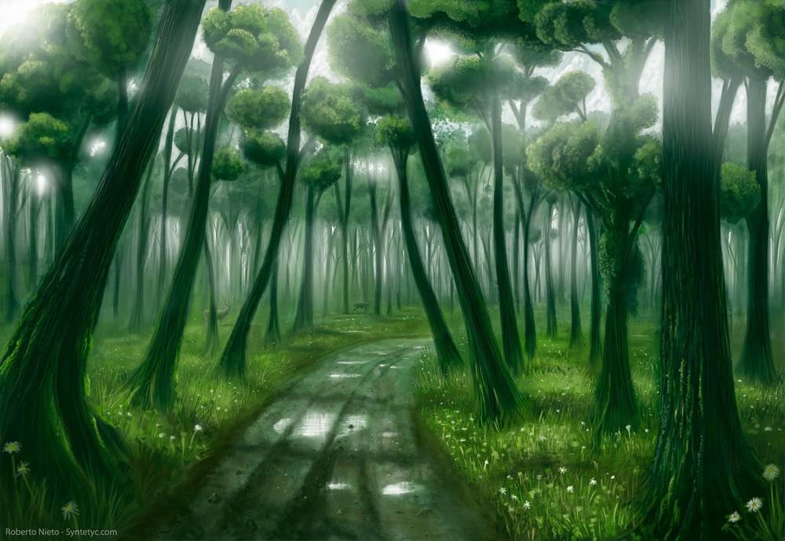
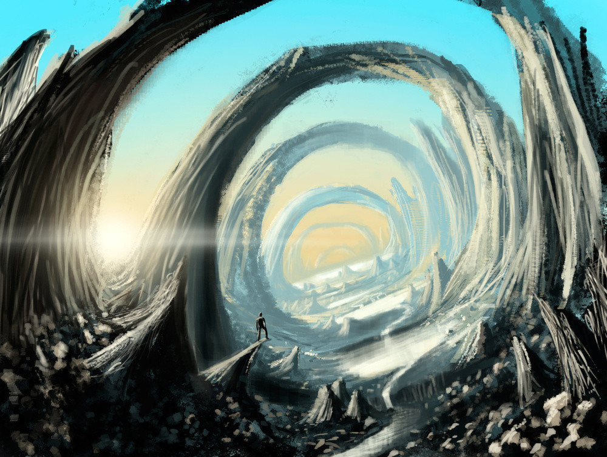
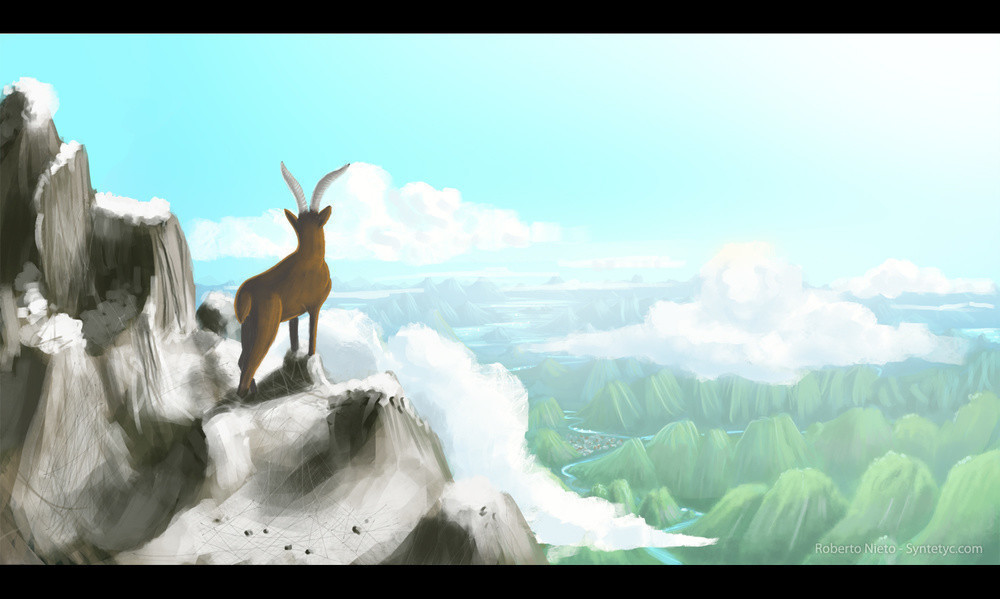
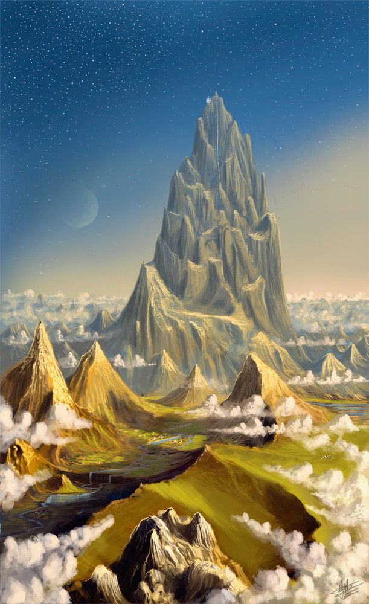
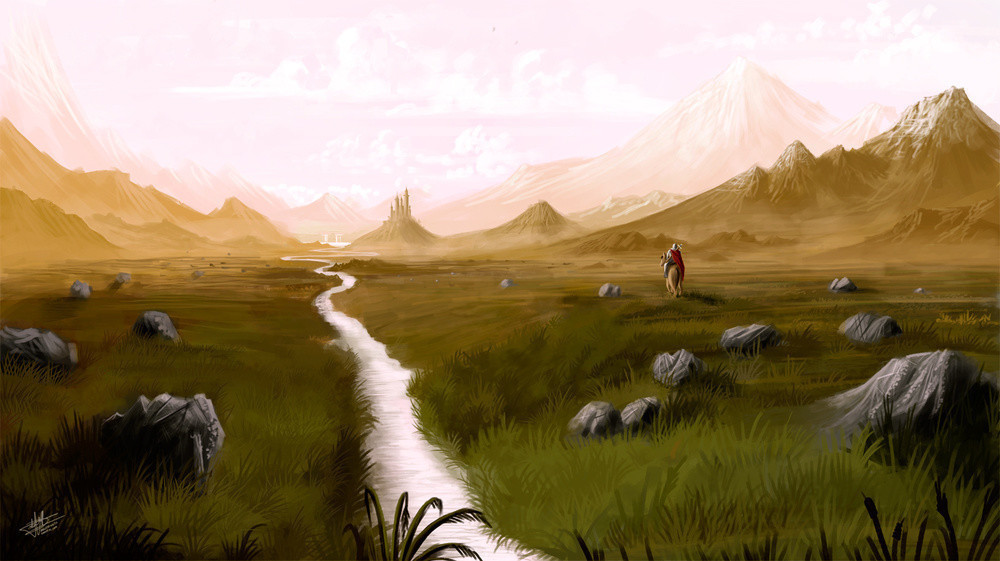

Od minulého rozhovoru s Jeffem Michelmannem uběhlo skoro už půl roku. Teď tu máme konečně další. Je trochu z jiného soudku. Představí se nám Robert Nieto, malíř, který by šel asi nejlépe zařadit kamsi mezi naivní umění.
Ne každému se takové malby líbí. Pokud by však patříte mezi nás, kterým se takové věci líbí, můžete si prohlédnout celou Robertovu galerii na jeho webových stránkách.
Můžeš se nám krátce představit? Odkud jsi, kde jsi studoval, kde v současnosti pracuješ…
Tak, je mi 28 let a žiji v Barceloně, kde také pracuji. V současnosti jako návrhář webových rozhraní, jejich použitelnosti a přístupnosti ve společnosti Omatech.
V menší míře dělám také různé ilustrace a malby krajin. Ne úplně na profesionální úrovni, přestože doufám, že se tomu budu moci jednou věnovat naplno - je to moje pravá vášeň. Musím ale připustit, že mám rád i práci, kterou teď dělám - design webových aplikací, a přestože bych se chtěl více věnovat malování, asi bych nechtěl opustit ani tuto práci.
Studoval jsem na škole designu a umění v Barceloně, jmenuje se IDEP. Ta mi doslova otevřela oči a já tam mohl proniknout do mnoha oblastí z designu, ilustrace a výtvarných umění.
Později jsem sám začal dělat online workshopy v rámci známé školy Gnomon. V té době jsem se skutečně ponořil do světa scénografie, krajin a koncepčního umění. Také jsem si doplnil znalosti ohledně základních pojmů a technik digitální ilustrace.
To mě všechno vedlo k tomu, abych sám začal procvičovat a zkoušel napodobovat slavné ilustrátory. Pomalu jsem si pak začal uvědomovat, že se i moje technika zlepšuje. A tak je tomu do dnes, učím se a zlepšuji každý den.
Jak jsi se dostal k tomu, co děláš - k malování? Táhlo tě to k tomu vždycky, nebo jsi se pro to rozhodl až později? Mnoho mladých to má pouze za zábavu a moc nevěří tomu, že by u toho vydrželi celý život. Bylo těžké se rozhodnout pro umění?
Jak už jsem řekl, neživím se tím, ale doufám, že jednoho dne budu. Baví mě to. Jestli mne to k malování vždy táhlo? Vždy mne umění a design uchvacovalo, ale až od chvíle, kdy jsem to začal skutečně studovat a objevovat všechny možnosti a cesty, které mi otevírá, rozhodl jsem se mu věnovat celý svůj život.
Předtím, než jsem se zaměřil na krajiny a abstraktní ilustrace, jsem dělal vektorovou grafiku. A přestože to mám i rád a stále tak i tvořím, jsou mi bližší krajiny a víc mne i uspokojují výsledky. Je to odlišný typ práce, mnohem více podobný tradiční malbě a myslím, že mi klade daleko větší výzvy, než zvládání nějakých vektorů.
Jak vlastně vzniká tvůj obraz? Jak jsi řekl, maluješ většinou krajiny - jak se taková krajina zrodí? Máš dlouho předtím, než začneš malovat, ten pohled v hlavě, nebo je to blesková záležitost?
Trochu od obojího. Někdy mi krajina vzniká pomalu v mysli, jindy zas spustím Photoshop a krajina se zrodí z pár náhodných křivek po virtuálním plátně. Jakýkoliv abstraktní tvar se dá velmi snadno v krajinu přeměnit.
Také se stává, že mám chuť malovat a nemám žádnou inspiraci - nic mne nenapadá. Pak si procházím různé internetové fotogalerie a pátrám v vnuknutí a většinou ho nacházím. Někdy je to kombinací barev, která mne zaujme. Jindy zajímavá kompozice nebo pouhý detail, díky němuž mne něco napadne a můžu z toho začít tvořit.
Zajímalo by mne, jestli se za obrazy skrývá i nějaký příběh. Občas do nich zasadíš osamělého poutníka. Kdo je to? Představa tebe samotného ve vysněných krajinách?
Ve svých ilustracích vidím vždy jako hlavní prvek samotnou scénu. Příběh vypráví cesta do neznáma, vzdálená tvrz nebo vodopád, ze kterého vzniká řeka. Naproti tomu jsou postavy až druhotné nástroje, kteří vyjadřují všechno ostatní. Chci, aby divák toužil zjistit, kam ona cesta vede, odkud teče řeka nebo aby si dokonce představil sebe samotného. Putujícího touto krajinou.
To je důvod, proč nedávám tolik důrazu na začlenění postav do svých prací. Nechci aby se stali tím hlavním, určitě ne. Spíše aby byli jakýmisi náhodnými kolemjdoucími.
Sebe si za tyto postavy nedosazuji, ale i tak bych rád své krajiny navštívil a mohl je poznat z první ruky, naživo…
Co pro tebe malování znamená? Pomáhá ti od stresu, od každodenních problému, od těžkých chvil? Jak se cítíš, když tvoříš?
Malování je pro mne odpočinkem a uklidněním - svým způsobem je to forma meditace. Při tvorbě se soustředíš a to tě trochu odnese od reality do světa barev, tvarů a kompozice. Upoutáš tím svou mysl v mnoha směrech. A když dokončuješ malbu, vidíš výsledek a díky tomu se cítíš dobře, to ti dá sílu pokračovat. Je to jako když je sportovec po tréninku, cítí se v pohodě a dobytý energií.
Tvoříš za pomoci moderních technologií, na počítači a patrně máš tedy i techniku celkem rád. Jak jsi se k tomuto typu umění dostal? Někteří lidé považují za počítačovou grafiku za jakési pseudo-umění, představa srovnání digitálních maleb s klasickými malíři je děsí. Co si o tom myslíš?
Začínal jsem právě na tradičním umění a během studií jsem si vyzkoušel mnoho různých uměleckých technik, od akvarely přes kvaš, akryl a tuš třeba až k přetisku a graffiti. Pomalu mne to ale táhlo spíše digitální tvorbě. Vždy mne zajímaly nové technologie a dosud mi toto nadšení pro techniku vydrželo, rád se dozvídám o nových věcech, jak v digitálním umění, tak i se vším ostatním, co trochu s moderní technikou souvisí.
První tablet pro kreslení jsem měl asi v 16 letech, ale to byla hrozná bída ve srovnání s tím, co existuje dnes a příliš jsem si ho neoblíbil. Mohl jsem ale díky němu experimentovat a získat tak první zkušenosti.
Později jsem získal svůj první Wacom, nejnižší typ, ale i tak to bylo úplně něco jiného, než můj první tablet. Zjistil jsem, že na něm mohu vytvářet prakticky stejné věci, jako jsem mohl pomocí klasické malby, ale s tou výhodou, že není potřeba žádný čas na přípravu a na úklid, žádné míchání barev, připravování plátna, čištění štětců, sušení… a zdálo se mi to mnohem všestrannějším a příjemnějším. To je důvod, proč jsem se zcela rozhodl pro digitální tvorbu.
Nemyslím si, že by to bylo nějaké pseudo-umění nebo něco méně než klasické umění. Je to pouze jiná technika se svými výhodami a nevýhodami jako všechny ostatní, které využívají odlišné nástroje. Konec konců umění není o specifické technice nebo konkrétním typu plátna.
Vážím si dobře vytvořené práce, ať už je to pomocí kvaše nebo pomocí Photoshopu. Vše vyžaduje cit pro barvy, pro kompozici, téma a techniku a jak už jsem řekl, každý způsob má své výhody i nevýhody.
Líbí se ti to, co vytvoříš? Někteří lidé nejsou věčně spokojeni s tím, co namalují a to je možná nutí se zlepšovat. Jiní se zlepšují pouze proto, že dělají to, co je baví. Jak to máš ty?
Mám rád vše, co vytvořím. Mám i své oblíbené ilustrace, ale v podstatě mám rád všechny svá díla. Může to být tím, že všechno co takto dělám, dělám pro sebe. Také tím, že je to postavené na tom, co se mi líbí a na tom, co mám na scenériích a krajinách rád.
Samozřejmě pokud se podívám na své výtvory okem odborníka, musím přiznat, že jsou i díla, která neodpovídají na sto procent mým představám.
Je tu ale i důvod, proč sám sebe považuji za malíře krajin a proč nechci být malíř malující postavy, architekturu nebo kola - přestože bych to zvládl, není to nic, co by mne nějak fascinovalo a co bych rád tvořil. Doufám, že pokud mi někdo časem nabídne práci, budou to krajiny, na které se zaměřuji a ne něco jiného.
Samozřejmě nevylučuji možnost, že někdy v budoucnosti začnu malovat i něco jiného, ale nyní mám rád, to co dělám a chci u toho i zůstat.
Už jsi to trochu nakousl, ale možná by nebylo na škodu se dozvědět trochu více - kde nacházíš inspiraci? Máš nějaké oblíbené malíře? Místa? Nebo třeba knihy, podle kterých své světy maluješ?
Mnoho inspirace nacházím v počítačových hrách a ve filmech, protože poslední dobou je víc a víc umění. Umění, kterým jsou například vytvářeny scény…
Hry jako Uncharted, Skyrim nebo Assassin’s Creed - hry na kterých pracovali koncepční umělci jako Raphael Lacoste, Dylan Cole, Andreas Rocha… Ti jsou pro mě velkými vzory i zdrojem inspirace.
A samozřejmě, i v knihách. Poslední, kterou jsem četl, je “Píseň ledu a ohně”. Mnoho scenérií z této knihy jsem i ztvárnil. Třeba ilustraci “El valle de Arryn y el Nydo de Águilas”. A mám v plánu i další. Také bych časem rád udělal nějaké k “Pánu Prstenů”.
Dalším skvělým zdrojem inspirace jsou galerie na DeviantArtu, kde se nachází mnoho skvělých umělců z celého světa a kde jsou také dobří kritici. Již zmínění - Dylan Cole, Raphael Lacoste a další - zde zveřejňují svá díla a je skvělé, že tak máme přístup i k jejich nejnovějším pracím.
Ještě bych zmínil hru “Magic” - dobrý zdroj pro nalezení inspirace k malbám.
Máš nějaké plány do budoucnosti? Sice se asi málokdo ze čtenářů v blízké době dostane do Španělska, ale stejně: neplánuješ třeba nějakou výstavu?
Do budoucnosti bych se chtěl dále zlepšovat, vylepšovat techniku a dělat věci lépe a lépe. Doufám, že jednoho dne se stanu skutečným profesionálem a budu moci žít pouze ze své tvorby. Výstavu zatím žádnou v plánu nemám. Ale kdybyste měli kdokoli zájem, každopádně se ozvěte!
A poslední otázka - co bys poradil těm, kteří jsou na začátku? Těm, kteří by se rádi v životě věnovali umění, ale nemají k tomu dost odvahy. Co by jim mohlo pomoci se zlepšit?
Patřím mezi ty, kteří si myslí, že umělcem se člověk musí narodit, ale na druhou stranu, nikdo z nás se nenarodil perfektní. Je to vše o trénování a procvičování, o tom být do toho zapálený a obětovat tomu svůj čas.
Během doby co jsem studoval na IDEPu, jsem poznal lidi, kteří nebyli zpočátku schopni namalovat jediný dobrý obrázek, ale procvičováním, studováním a zanícením se dostali na stejnou úroveň, jako ostatní. Možná i na lepší. Všechno je to o tréninku.
Takže, tomu kdo se zajímá o svět umění by mělo být jednoduše řečeno, aby se učil, díval na práce ostatních, účastnil se seminářů, škol… Ale to všechno vyžaduje vytrvalost a trpělivost. Bude se častokrát stávat, že věci nepůjdou tak, jak byste si je představovali. Postupně ale uvidíte, aniž byste si to uvědomovali, že se zlepšujete. Uvidíte, že vydaný čas se vyplatil a to vám dá chuť pokračovat.
